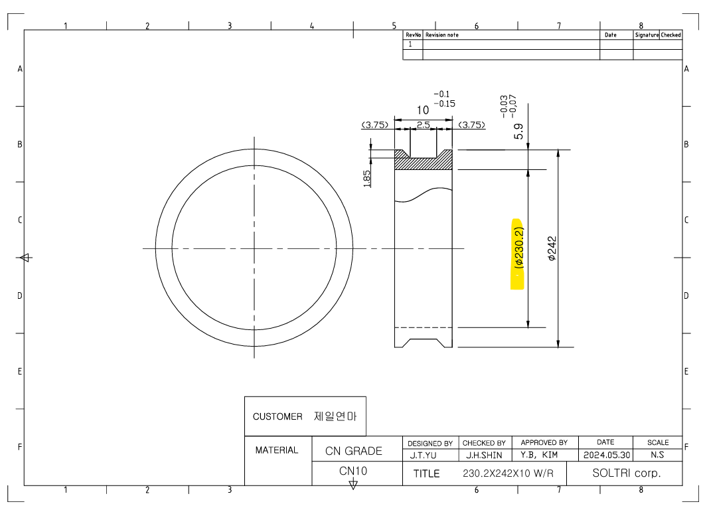

13호기 S3 · O2028 / O2029
제일연마 · 230.2×242×10 W/R · CN10 · 도면 2024-05-30 / 자료 접수 2026-09-30
소재 외경·내경 미확정. T02 날 폭 2mm는 사용자 지정 가정입니다. 실행용 초안은 소재값 0에서 알람으로 정지합니다. 시뮬레이션은 외경 242 / 내경 230.30의 절삭여유 0인 가상 소재를 사용하며 실제 소재를 뜻하지 않습니다.
실제 원점/척 물림, T01·T02 보정, 공구 형상·간섭, 회전수의 적합성 및 완성 홈 형상은 검증되지 않았습니다.
도면에 맞춘 설정
| 항목 | 변수 | 제공 파일 | 도면 설정 |
|---|---|---|---|
| 소재 외경 | #101 | 145 | 미확정 — 실행용 초안 0 |
| 소재 내경 | #102 | 126 | 미확정 — 실행용 초안 0 |
| 완성 외경 | #103 | 140 | 242 |
| 완성 내경 | #104 | 127.50 | 230.30 · 벽 두께 기준 후보 |
| 제품 폭 | #105 | 9.87 | 9.87 · 공차 9.85~9.90 |
| 절단날 폭 | #106 | 1.85 | 2.00 · 사용자 지정 가정 |
| 홈 깊이 지령 | #120 | 3.75 | 3.70 · 반경 깊이 1.85 |
| 홈 Z 이동량 | #121 | 2.15 | 2.50 · 실제 홈 폭은 날 형상 확인 필요 |
벽 두께 5.9 −0.03/−0.07 → 5.83~5.87mm. 외경이 242mm일 때 내경 범위는 230.26~230.34mm이며 중간값 230.30을 적용했습니다. 괄호 안 Ø230.2는 참고치수입니다. 외경 실측에 따라 내경 목표도 벽 두께와 함께 관리해야 합니다.
홈 깊이는 직경 감소값을 쓰므로 #120=3.70입니다. #121=2.50은 공구 기준점의 Z 이동량입니다. 홈 바닥 폭 2.5와 경사면은 보링바 홈날 폭·노즈R·보정 기준에 따라 달라지므로 이 값만으로 도면 완성 형상을 보증하지 않습니다. (3.75)는 폭 10의 참고 어깨 치수로, 완성 폭 9.87일 때 단순 대칭 계산은 3.685입니다.
원문과 확인할 차이
- 최신 제공한 CNC_기술자료 7개 파일을 기준으로 했으며 원문 파일을 별도 보존했습니다.
- 사진의 #100=254와 달리 제공 파일은 #100=270입니다. 원점 길이는 제공 파일의 270을 유지했습니다.
- 사진에는 #122/#123 및 M55가 있지만 최신 메인에는 없습니다. 임의로 추가하지 않았습니다.
- #119는 주석상 홈 ON/OFF이지만 제공 O6003은 이 변수를 검사하지 않아 홈 가공이 항상 실행됩니다.
- 사진/파일의 면취 수치가 다릅니다. 제공 파일 #107=0.60, #108=0.40, #109=0, #110=0.60을 유지했습니다. 도면에 명시된 면취 치수로 확인된 값은 아닙니다.
- RPM 1600과 이송은 제공값 유지이며, 외경 242mm 및 CN10에 적합하다고 판정한 값이 아닙니다.
- 도면 설정에서 피치 11.87mm, 4개씩 5묶음+잔량 2개=22개. 최대 묶음 보링 47.48mm, 절단 끝 기준 원점까지 8.86mm. 실제 척 간섭 여유와는 다릅니다.
- O6001과 O6002의 G4 X0.5 대기, 공압 M53/M54 및 절단 후 X 먼저 후퇴 → W10 순서를 그대로 유지합니다.
도면

프로그램별 코드 · O번호가 1행
O2028 · 도면 설정 초안
1 O2028(MAIN PROGRAM); 2 (SIZE DEF); 3 #100=270. (CHUCK LENGTH); 4 #101=0 (MATERIAL OD); 5 #102=0 (MATERIAL ID); 6 #103=242 (WORK OD); 7 #104=230.3 (WORK ID); 8 #105=9.87 (WORK LENGTH); 9 #106=2.0 (T02 TIP WIDTH); 10 ; 11 (CHAMFER SIZE DEF); 12 #107=0.60 (ID RIGHT); 13 #108=0.40 (OD RIGHT); 14 #109=0 (ID LEFT); 15 #110=0.60(OD LEFT); 16 ; 17 (GROOVING SIZE DEF); 18 #119=1 (0=OFF, 1=ON); 19 #120=3.7 (GROOVING DEPTH); 20 #121=2.5(ROOT WIDTH); 21 ; 22 (RPM FEED); 23 #111=1600 (T01 BORING BAR RPM); 24 #112=0.11 (STEP CUTTING T01 FEED1); 25 #114=0.08 (GROOVING SIZE T01 FEED2); 26 #115=0.02 (GROOVING DEPTH T01 FEED3); 27 #116=1600 (T02 CUTTING BITE MIN RPM); 28 #118=0.09 (T02 FEED); 29 (SUB PROGRAM); 30 (TCHECK); 31 #124=0 (0=NON, 1=USE); 32 (DRAWING DRAFT - SETUP NOT RELEASED); 33 IF [#101 LE 0] THEN #3000=28; 34 IF [#102 LE 0] THEN #3000=28; 35 IF [#101 LT #103] THEN #3000=29; 36 IF [#102 GT #104] THEN #3000=29; 37 M98 P2029; 38 M05; 39 M30; 40 %
O2029 · 제공 원문 유지
1 O2029(60G); 2 #555=[#105-#121]/2.0 (SHOULDER WIDTH); 3 #530=2.1 (CHUCK SAFETY); 4 #500=#100-#530; 5 #501=#101+4.; 6 #502=#102-3.5; 7 #503=#103+4.; 8 #504=#104-5.; 9 #505=#105+#106(WORK+T02 LENGTH); 10 #506=55.(BORING BAR MAX WIDTH); 11 #507=1.(BORING BAR MIN WIDTH); 12 #510=1.0 (CHAMFER VALUE); 13 #549=FIX[#100/#505]; 14 IF [#549 EQ 1] THEN #549=2.0; 15 N10 ; 16 #517=FIX[#500/#505]; 17 #518=#517*#505; 18 G10 L2 P0 Z[#100]; 19 G30 U0 W0; 20 G00 U150; 21 N100 (FACE CUTTING); 22 M98 P6000; 23 #515=FIX[[#506-#507]/#505]; 24 IF [#124EQ1] GOTO 11; 25 GOTO 12; 26 N11; 27 #515=1; 28 N12; 29 #516=#515*#505; 30 #521=0; 31 #522=#521*#505; 32 N120(IMPACT PREVENTION); 33 IF[#515 LE #517] GOTO 130; 34 #515=#517; 35 #516=#515*#505; 36 N130 (STEP CUTTING); 37 M98 P6001; 38 N150 (CHAMFER); 39 M98 P6002; 40 N160 (GROOVING); 41 M98 P6003; 42 N170 (COUNT); 43 #520=#520+1; 44 #521=#521+1; 45 #522=#522+#505; 46 N180 (CUTTING); 47 M98 P6004; 48 N190 (IF OR ELSE); 49 IF [#520 LT #515] GOTO 150; 50 G00 W10.0 T02; 51 IF [[#521+#515] GT #517] GOTO 200; 52 GOTO 130; 53 N200 (LAST CUTTING); 54 #515=FIX[[#500-#522]/#505]; 55 #516=#515*#505; 56 IF [#515 GE 1] GOTO 130; 57 N250 (WORK RETRACT); 58 M53; 59 M05; 60 G30 U0 W0; 61 M99; 62 %
O6000 · 제공 원문 유지
1 O6000(FACECUTTING); 2 G00 Z10.0 T02; 3 X[#501]; 4 Z0.; 5 M00; 6 G97 M03 S#116; 7 G98 G01 X[#502] F[#116*#118]; 8 G00 X[#501]; 9 Z20.; 10 M99; 11 %
O6001 · 제공 원문 유지
1 O6001(STEPCUTTING); 2 G00 X#103 M54 T01; 3 G97 G00 Z[-#522+5.0] S#111 M03; 4 G98 G01 Z-[#522+#516] F[#111*#112]; 5 M53;G4X0.5; 6 U0.2; 7 G00 W[#516+#510]; 8 #520=0; 9 M99; 10 %
O6002 · 제공 원문 유지
1 O6002(CHAMFER); 2 G00 X#103 M54 T01; 3 G97 S#111 M03; 4 G98 G01 Z[-#522+#510] F[#111*#114]; 5 X[#103-[[#510+#108]*2]]; 6 X[#103+[[#510+#107]*2]]; 7 M53; 8 G4X0.5; 9 M99; 10 %
O6003 · 제공 원문 유지
1 O6003 2 G00 X[#103+0.1] T01; 3 G00 Z[-#522-#555]; 4 G01 X[#103-#120] F[#111*#115]; 5 G01 Z[-#522-#555-#121] F[#111*#112]; 6 G00 X[#103+0.1]; 7 G00 Z[-#522+20.0]; 8 M99; 9 %
O6004 · 제공 원문 유지
1 O6004 2 G00 X[#503] T02; 3 Z[#110-#522]; 4 G97 G00 X+[#503] S#116 M03; 5 G98 G01 X+[#103] F[#116*#118]; 6 U[-#110*2.0] W[-#110]; 7 X[#504]; 8 G00 X[#501]; 9 W10.; 10 M12; 11 M99; 12 %